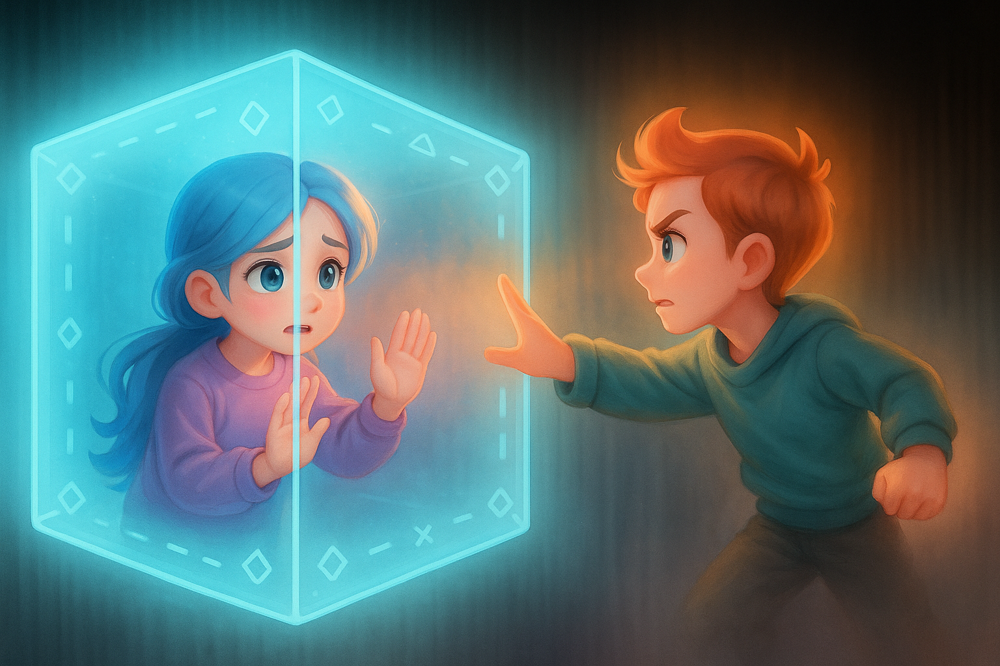

DOROLAND STORY
도로랜드의 이야기
"기술은 자연을 해치지 않아, 우리가 올바르게 사용한다면.."
도로랜드는 기술과 자연이 조화롭게 공존하던 테마파크. 어느 날 갑자기 모든 것이 멈추고, 도로랜드를 되살리기 위한 모험이 시작됩니다. 각 키트는 도로랜드의 구역을 복구하는 미션과 연결되어 있습니다.
사파리 구역의 센서를 살리고, 하모니아의 기계를 수리하고, 잊혀진 시간 속 비밀을 밝히세요. 당신이 도로랜드를 다시 움직이게 할 수 있는 유일한 사람입니다.